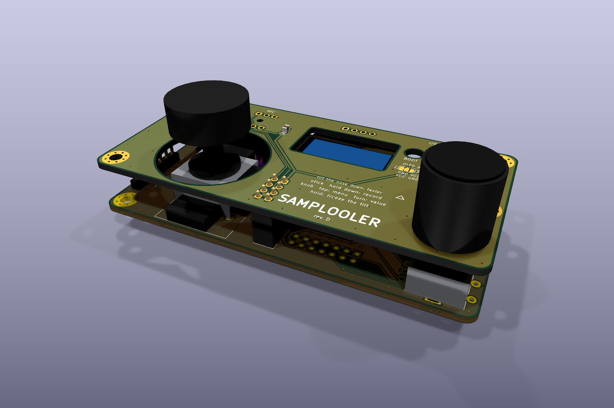

SAMPLOOLER
A small looper you play by tilting it.
Hold the button and make a sound. Let go and it loops. Tip the box forward and the loop runs faster; tip it back and it runs backwards. Open source, and it flashes from this page.


See and hear it
Rendered, not filmed. The sound is the firmware's own playback engine running on a computer, and the screen is the firmware's own drawing code.
How it works
Try it here
The same playback engine as the firmware, running in your browser. Hold the button to record from your microphone, or load the demo loop. On a phone, turn on tilt and tip the phone. On a computer, drag the slider.
Headphones stop the loop from feeding back into the mic.
What it does
| Record | Hold the button and make a sound, up to 20 s at 32 kHz. Let go and it loops. |
| Tilt | Forward plays faster, back plays backwards. Snap rounds the speed to octaves and fifths. |
| Roll | Left adds a tape delay, right a stutter. |
| Modes | TAPE: speed and pitch move together. GRAIN: they move apart. |
| Voice | Optional: 18 voices on the input before it records, from autotune and harmonies to a choir and a vocoder. |
| Slots | 8 loops saved on the board, kept when you update it. |
| Together | Over the radio with the other instruments: a take sets their tempo or lands on their beat, and key and scale are shared. |
| Computer | USB MIDI and a USB sound card on one cable, and a VST3 plugin that shows and sets everything. |
Screens
The loop is a tape running between two reels, and a small stick-figure operator lives on it. It runs with the tape, forwards or backwards, as fast as you tip the box. Turn the delay on and its echoes trail behind; stutter the loop and the operator stutters too; in GRAIN mode it juggles; tip all the way and it's flung off its feet. Leave it alone and it falls asleep.


Rendered from the firmware's own drawing code on a computer (tools/uisim/tour.sh makes the video).
Get one
Prebuilt
Both boards, every module soldered on, flashed and tested. Built by hand in Haifa. Write and ask about price and shipping.
Email WhatsAppBuild it with me
The ESP32 workshop: 7 meetings at MEZO, Haifa, kit included.
2,200 ₪ The workshopBuild it yourself
Order the boards, solder the modules on, flash it from this page. Everything you need is in the repository.
Build guideFlash from the browser
- Use Chrome or Edge on a computer. Phones cannot do this.
- Hold the BOOT button on the board while you plug it in, then let go. The running firmware uses USB for MIDI and audio, so the browser only finds the board this way.
- Press the button on the right and pick the port.
- When it says done, unplug it and plug it in again. It may say the device was lost; that is normal.
It writes the program only: your loops and settings stay on the board, unless you tick Erase when it asks. From a shell, tools/flash.sh in the repository does the same without holding BOOT.
Other instruments
The same board can be other instruments. Each one is its own firmware: install it from here the same way, play it, and put the Samplooler back the same way. Your loops stay on the board. These are the ones that have run on a board; more are in progress in the repository.
Anyone can add an instrument: how.
Build one
The Stack is two circuit boards, one above the other, with the usual modules soldered on. Both boards come as one panel from JLCPCB. It takes an evening of through-hole soldering and six small capacitors.
| Part | What it does |
|---|---|
| ESP32-S3 SuperMini | runs everything |
| INMP441 | microphone |
| PCM5102A module | line out on a 3.5 mm jack |
| MPU-6050 (GY-521) | tilt |
| SSD1306 0.96" OLED | screen |
| EC11 encoder, thumb joystick | the controls |
| MAX98357A and a small speaker | optional speaker |
The output is line level: use headphones through a small amp, powered speakers, or a mixer. The current boards are rev C; the files in the repository are rev D, being tested now. The parts list, the order settings, what to check before powering up and the first power-on are in the build guide.
With a computer
Plugged into a computer, it shows up as a MIDI port and a sound card. The loop goes straight into a DAW track, and anything the DAW plays can be recorded into the box. Every setting can be changed over MIDI. The plugin (VST3 and standalone) shows the tilt, the speed and the log, and has buttons for record, save and load.
Open source
| Part | Licence |
|---|---|
| firmware, instruments, tools | GPL-3.0 |
| plugin | AGPL-3.0 (JUCE) |
| circuit boards, docs, images | CC BY-SA 4.0 |
Fork it, change it, sell your own. Keep it open and say where it came from. Bugs, questions and builds go in GitHub issues.